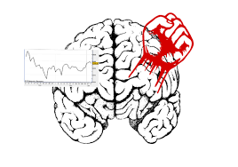

cognitives 
etudes et statistiques realisées
Il y a tout juste un mois, une étude franco américaine montrait que des chiens pouvaient sentir l’odeur des crises d’épilepsie. Au-delà du caractère surprenant de cette étude, une nouvelle porte s’ouvre dans la recherche en matière de prédiction concernant cette pathologie aux origines très variées qui fait encore figure de maladie complexe à cerner. Avec environ 600.000 personnes épileptiques en France et près de 60 millions de personnes dans le monde, cette maladie invalidante et souvent stigmatisante, constitue l’un des champs de recherches les plus actifs en neurologie. Que l’on aille chercher du côté de la génétique, du fonctionnement neurobiologique, ou encore de l’imagerie cérébrale, la recherche se bat pour lever le mystère de la mécanique des crises épileptiques et mettre en place de nouvelles thérapies, soulageant les personnes souffrant de ce que l’on surnomme encore le “grand mal”